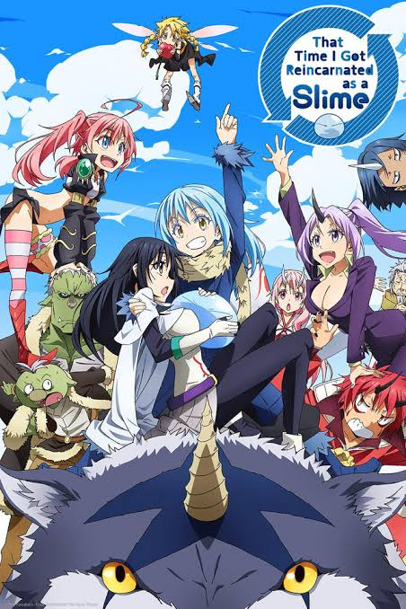

Season 1 (2018)
Rimuru befriends Goblins, Dire Wolves, and more as he builds the foundations of what will become the nation of Tempest.

OVA (2019-2020)
Bonus side-story episodes set during Season 1, showing extra adventures and comedic moments with Rimuru and the residents of Tempest.

The Slime Diaries (Spin-off, 2021)
A laid-back slice-of-life spin-off showing Rimuru and the residents of Tempest enjoying their peaceful everyday lives through the seasons.